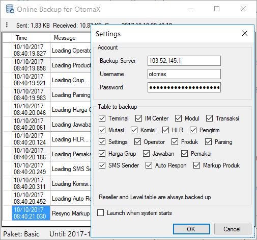

Online Backup
Dalam usaha server pulsa database seolah merupakan nyawa, kehilangannya baik karena database corrupt atau harddisk mati menjadi momok dan bencana besar. Salah satu solusinya ialah menyimpan database di penyimpanan online, dengan harapan apabila terjadi hal - hal yang tidak diinginkan pada perangkat komputer misalnya harddisk mati, komputer tersambar petir dan lain sebagainya, kita masih punya database tersebut di penyimpanan online.
Berangkat dari situ OtomaX menghadirkan Online Backup, merupakan modul tambahan berguna membackup data secara otomatis di penyimpanan online yang disediakan oleh OtomaX. Dirancang khusus agar dapat bekerja secara efisien menggunakan kompresi dan hanya mengirim data yang berubah sehingga menghemat bandwith internet. Layanan Online Backup dapat dinikmati dengan biaya berlangganan relatif terjangkau. Dapat bekerja di semua Edisi dan semua versi OtomaX berbayar kecuali Edisi server Cabang klik disini, asalkan mendaftar layanan Online Backup yang alurnya seperti di bawah ini:
Pendaftaran
Berikut ini alur pendaftaran layanan Online Backup dan biayanya:
- Siapkan username calon username Online Backup yang Anda inginkan, minimal 6 huruf (tidak boleh mengandung spasi dan tanda baca), contoh: diffacell.
- Siapkan email yang valid (disarankan @gmail.com), akan digunakan sebagai tujuan pengiriman password Online backup.
-
Pilih salah satu paket layanan Online Backup di bawah ini:
Paket Maksimum Trx per Hari Biaya Setup Iuran per Bulan Basic 1.000 Rp100.000 Rp10.000 + Rp10.000* Pro25 5.000 Rp100.000 Rp25.000 + Rp15.000* Pro50 10.000 Rp100.000 Rp50.000 + Rp20.000* Pro75 20.000 Rp100.000 Rp75.000 + Rp25.000* Business 50.000 Rp100.000 Rp100.000 + Rp30.000* Premium 100.000 Rp100.000 Rp200.000 + Rp40.000* Enterprise 200.000 Rp100.000 Rp300.000 + Rp50.000* Enterprise2 300.000 Rp100.000 Rp400.000 + Rp60.000* Ent500 500.000 Rp100.000 Rp500.000 + Rp70.000* Ent750 750.000 Rp100.000 Rp700.000 + Rp80.000* Ent1000 1.000.000 Rp100.000 Rp850.000 + Rp90.000*
Keterangan:
- Transaksi maksimum ialah batasan maksimal transaksi upload data (hit) dari komputer pengguna OtomaX ke Online Backup. Jadi, misalnya akumulasi total transaksi baik sukses atau gagal isi pulsa, token, paska bayar, voucher game dan lainnya dalam satu hari rata - rata sejumlah 2000, maka pilih paket Pro25 atau lebih tinggi.
- Biaya setup hanya dikenakan 1 kali di awal pendaftaran.
- Iuran Bulanan (yang ditandai dengan tanda asterik (*) di atas) hanya dikenakan jika mengaktifkan layanan Web Report. Jadi misalnya Anda mengambil paket Pro25 dan hanya berlangganan Online Backup, maka iuran bulanannya Rp25.000; dan apabila sekaligus berlangganan Web Report, maka iuran bulanannya Rp40.000 (Rp25.000 + Rp15.000).
- Dapat berlangganan lebih dari 1 bulan.
- Data yang dibackup antara lain: Reseller, Level/Grup, Terminal, IM Center, Modul, Transaksi, Mutasi, Komisi, HLR, Pengirim, Settings, Operator, Produk, Parsing, Harga Grup, Jawaban, Pemakai, SMS Sender, Auto Respon, dan Markup Produk.
- Data transaksi dan mutasi yang dikirim dan disimpan hanya data 1 hari terakhir, kecuali mengaktifkan layanan Web Report atau Mobile App (APK), maka data 31 hari terakhir untuk transaksi, dan 7 hari terakhir untuk mutasi.
- Saat menjalankan OtomaX Online Backup Restore, yang didownload adalah data maksimal 3 hari terakhir (untuk transaksi dan mutasi).
- Ukuran database dibatasi sampai 10 GB. Jika melebihi 10 GB, beberapa data (berdasarkan urutan tanggal) akan dihapus.
- Tidak perlu mengatur interval backup sehingga lebih realtime, sebab sudah by sistem akan otomatis mengupload data ke penyimpanan online ketika terjadi perubahan data.
- Apabila jumlah transaksi melebihi batasan maksimum harian sesuai paket, dan atau masa berlangganan berakhir; maka layanan Online Backup akan tidak bekerja.
- Paket dapat diupgrade dan juga didowngrade. Upgrade paket akan dikenakan biaya iuran prorata tergantung sisa masa aktif. Masa aktif tidak berubah. Sementara downgrade paket tidak dikenakan biaya, tidak menambah masa aktif dan juga tidak ada refund biaya. Adapun alur upgrade dan downgrade paket klik disini.
- Agar dapat bekerja layanan Web Report harus diaktivasi terlebih dahulu, alur aktivasi dan besar biayanya klik disini.
- Siapkan uang di rekening Anda senilai biaya paket yang Anda inginkan. Kami menerima pembayaran melalui Bank BCA, BNI dan Mandiri.
-
Kontak Kami di ID Telegram: @mam_service atau HP/WA/TG: +628-5258-1112-30, sampaikan Anda ingin mendaftar layanan Online Backup serta informasikan:
- Username yang sudah Anda siapkan.
- Email Anda.
- Paket yang Anda pilih.
- Lama berlangganan Anda, misalnya: 3 bulan.
- Tunggu Kami memberikan jumlah uang yang harus Anda transfer beserta rekening tujuan transfer.
- Lakukan transfer sesuai jumlah yang Kami berikan ke rekening yang Kami berikan.
- Konfirmasikan bahwa Anda telah melakukan transfer.
- Setelah pembayaran Anda tervalidasi pendaftaran layanan Online Backup akan Kami proses.
- Kami akan menginformasikan akun Online Backup Anda.
- Selesai.
Pembayaran Iuran
Adapun alur pembayaran iuran bulanan layanan Online Backup sebagai berikut:
-
Kontak Kami di ID Telegram: @mam_service atau HP/WA/TG: +628-5258-1112-30, sampaikan Anda ingin membayar iuran bulanan layanan Online Backup serta informasikan:
- Username akun Online Backup Anda.
- Lama berlangganan Anda, misalnya: 3 bulan.
- Tunggu Kami memberikan jumlah uang yang harus Anda transfer beserta rekening tujuan transfer.
- Lakukan transfer sesuai jumlah yang Kami berikan ke rekening yang Kami berikan.
- Konfirmasikan bahwa Anda telah melakukan transfer.
- Setelah pembayaran Anda tervalidasi pembayaran iuran Online Backup akan Kami proses.
- Kami akan menginformasikan status pembayaran iuran Online Backup Anda.
- Selesai.
Upgrade/Downgrade Paket
Anda dapat menaikkan Paket Online Backup (Upgrade), misalnya dari Paket Basic ke Paket Pro50. Selain itu Anda juga dapat menurunkan Paket Online Backup (Downgrade), misalnya dari Paket Enterprise ke Paket Business. Alur Upgrade atau Downgrade Paket ialah sebagai berikut:
-
Kontak Kami di ID Telegram: @mam_service atau HP/WA/TG: +628-5258-1112-30, sampaikan Anda ingin Upgrade atau Downgrade paket layanan Online Backup serta informasikan:
- Username akun Online Backup Anda.
- Paket tujuan Upgrade atau Downgrade yang Anda inginkan.
- Tunggu Kami memberikan jumlah uang yang harus Anda transfer beserta rekening tujuan transfer.
- Lakukan transfer sesuai jumlah yang Kami berikan ke rekening yang Kami berikan.
- Konfirmasikan bahwa Anda telah melakukan transfer.
- Setelah pembayaran Anda tervalidasi Upgrade paket Online Backup akan Kami proses.
- Kami akan menginformasikan status Upgrade atau Downgrade paket Online Backup Anda.
- Selesai.
Riwayat
Online Backup
v3.22
- Fix: Strings did not work properly
v3.21
- Fix: did not upload required data for APK.
v3.20
- More support for Mobile App (APK).
- Some fixes.
v3.17
- Support Mobile App (APK).
- Some fixes.
v3.15
- Fix: Some fixes and improvements.
v3.12
- Fix: 413 Entity Too Large when comparing data komisi.
v3.10
- New: We rewrote most of the codes!
- New: Detects drastic change of local data to prevent you uploading obsolete data to the server.
- New: Change password does not require you to login first.
- New: Allows multiple instances with their own individual setting. Just copy the exe file to another folder or rename it.
v3.01
- New: Able to adapt differences in client and server database structure.
v3.00
- New: Optimizes memory usage.
v2.01
- Fix: DbException: String or binary data would be truncated. String or binary data would be truncated. (kejadian acak)
- Fix: IM Center hanya terupload sebagian data.
v2.0
- Fix: Checks and compares database version before doing backup.
v1.27
- Fix: Readability of error message when logging in.
v1.26
- Fix: Change password dialong.
v1.25
- Fix: IndexOutOfRangeException: Index was outside the bounds of the array.
- Some fixes
v1.23
- New: Sends Web Report Settings in a separate thread so it doesn't have to wait all uploads done.
- New: Delays connecting when context menu or Settings dialog is shown.
- Fix: NullReferenceException on connecting.
- Fix: Refactors some codes.
- Some fixes
v1.21
- New: Web Report shared domain change from CekStatus.com to report.web.id.
- Fix: ArgumentOutOfRangeException: capacity was less than the current size.
v1.20
- New: Web Report tab on Settings dialog.
- Fix: OverflowException: Arithmetic operation resulted in a overflow.
v1.19
- New: Separates upload process for last and history transactions.
- New: Login version 2. Encrypts login response.
v1.18
- Fix: Prevents big upload size for data deletion.
v1.17
- Fix: Changes UI on Change Password dialog.
- Fix: Improves realtime changes detection for member, transaction, product, and markup data.
v1.16
- Fix: Synhronizes Member table.
v1.13
- Fix: Invalid column name 'kode_group', 'domain_exclusion'.
- Fix: Invalid column name 'tgl_data'.
v1.12
- Fix: Optimasi exception handling.
v1.11
- New: Menu Stop Engine.
- New: Pengecekan jumlah data komisi dan warning jika jumlah data > 2 milyar baris.
- New: Data komisi yang dibackup hanya yang belum ditukar.
- Fix: Optimasi penggunaan memori pada program.
Online Backup Restore
v2.14
- Supports apk_menu.
- Some fixes.
v2.13
- Backup Reseller and Pengirim before restoring automatically.
v2.12
- Renames file to OB_Restore.exe and some fixes.
v2.11
- Fix: Invalid column name 'kode_reseller' when comparing tiket_deposit table.
v2.10
- New: Adds tiket_deposit table.
- Fix: Uses login version 2, more secure.
- Fix: Updates database structure.
v2.00
- Fixes some bugs.
v1.11
- Fix: Error 'NULL' while restoring transaction data.
v1.10
- New: Checks and updates database structure automatically.